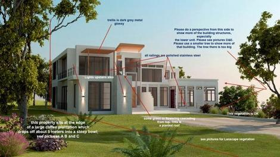

Design Reviews

A process in which stakeholders view a 3D model and provide their feedback to validate multiple design aspects.
These aspects include evaluating meeting the program, previewing space aesthetics and layout in a virtual environment, and setting criteria such as layout, sight-lines, lighting, security, ergonomics, acoustics, textures and colors, etc. This BIM use can be done by using computer software only or with special virtual mock-up facilities, such as CAVE (Computer Assisted Virtual Environment) and immersive lab.
Virtual mock-ups can be performed at various levels of detail depending on project needs. An example of this is to create a highly detailed model of a small portion of the building, such as a facade to quickly analyze design alternatives and solve design and constructibility issues.
Potential Value
- Eliminate costly and timely traditional construction mock-ups
- Different design options and alternatives may be easily modeled and changed in real-time during design review base on end users and/or Appointing Party feedback
- Create shorter and more efficient design and design review process
- Evaluate effectiveness of design in meeting building program criteria and Appointing Party's needs
- Enhance the health, safety and welfare performance of their projects (For instance, BIM can be used to analyze and compare fire-rated egress enclosures, automatic sprinkler system designs, and alternate stair layouts)
- Easily communicate the design to the Appointing Party, construction team and end users
- Get instant feedback on meeting program requirements, Appointing Party's needs and building or space aesthetics
- Greatly increase coordination and communication between different parties. More likely to generate better decisions for design
Resources Required
- Design Review Software
- Interactive review space
- Hardware which is capable of processing potential large model files
Team Competencies Required
- Ability to manipulate, navigate, and review a 3D model
- Ability to model photo realistically including textures, colors and finishes and easily navigable by using different software or plug-ins
- Strong sense of coordination. Understanding roles and responsibilities of team members
- Strong understanding of how building/facility systems integrate with one another